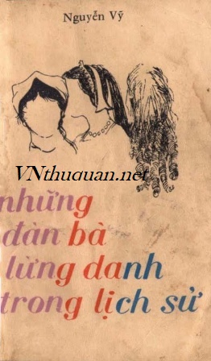

« Back
Những Đàn Bà Lừng Danh Trong Lịch Sử
By Nguyễn Vỹ

MỤC LỤC
- I - TRƯNG Nữ VƯƠNG
- II - CLÉOPÂTRE
- III - HOÀNG HẬU SABA
IV - Hoàng Hậu THÉODORA
V - LUCRÈCE BORGIA
VI - POPPÉE, Hoàng Hậu La Mã
VII - AGRIPPINE, Mẹ Của NÉRON
VIII - MESSALINE
IX - ĐẮC KỶ
X - DƯƠNG QUÝ PHI
XI - Vũ Tắc Thiên
XII - TỪ HI THÁI HẬU
XIII - CATHERINE II – NỮ HOÀNG ĐẾ NƯỚC NGA
XIV - DÉSIRÉE CLARY
XV - JOSÉPHINE
XVI - Nữ Bá Tước WALEWSKA
XVII - MARIE LOUISE
XVIII - Catherine D’ Aragon
XIX - Anne Boleyn
XX - JANE SEYMOUR
XXI - ANNE DE CLÈVE
XXII - CATHERINE HOWARD
XXIII - CATHERINE PARR
XXIV - SISSI, Nữ Hoàng Áo Quốc
XXV - Nữ Hoàng VICTORIA
XXVI - MATA-HARI
XXVII - EVA PÉRON
XXVIII - SVETLANA
XXIX - ANASTASIA, Công Chúa Nga
XXX - MARIE CURIE